Traffic, policy, labels, IP lists, workloads and events in a btop-style terminal UI and a scriptable CLI. Every request is one you caused, every one is counted, and writes happen only when you arm them.
EExplainwhich rule allows or blocks a flow, and a jump to it
GGeneratethe allow rules an app’s traffic needs, fan-in ports folded
DDraftwhat your draft policy would decide, per flow, before provisioning
:Readiness → enforcea verdict per app, five steps to full, a watch and an exact rollback
mMarkssquelch known noise, flag what matters, locally
MBulklabels and enforcement for many workloads, one confirm
fFind rulesevery rule that names a label, IP list, service or workload
IImpactthe workloads behind a rule, per side, with t to switch it off
Both packages put illumio-tui in /usr/bin with no dependencies, and are install-tested on Debian 12, Ubuntu 22.04, Rocky Linux 9 and AlmaLinux 8 before each release.
Windows
winget, once the package is merged into winget-pkgs (pending). It installs the MSI below, for the current user.
> winget install AlexGoller.IllumioTUI
> winget upgrade AlexGoller.IllumioTUI # later, for a new release
MSI (v0.4.1 and later): download illumio-tui-<version>-x86_64-pc-windows-msvc.msi from the release page and double-click it, or install it silently:
It installs for the current user, without admin rights, into %LOCALAPPDATA%\Programs\illumio-tui and adds that folder to your user PATH (open a new terminal). A newer MSI upgrades the installed version in place; uninstalling (Settings > Apps) also removes the PATH entry. The MSI is not code-signed, so SmartScreen may warn when you open it: More info, then Run anyway. Each release installs, upgrades and uninstalls it on a Windows runner before publishing.
Scoop: the repository is its own bucket.
> scoop bucket add illumio-tui https://github.com/alexgoller/illumio-tui
> scoop install illumio-tui
> scoop update illumio-tui # later, for a new release
Release archives
Every GitHub Release carries one archive per platform, the .deb/.rpm packages, the Windows .msi and a SHA256SUMS file covering all of them. The current release is v0.5.6; the changelog lists what every release brought.
macOS may quarantine a binary downloaded with a browser; clear it with xattr -d com.apple.quarantine ~/.local/bin/illumio-tui. On Windows, compare Get-FileHash of the zip with its line in SHA256SUMS, extract it, and move illumio-tui.exe into a folder on your PATH.
Then point it at your PCE (see Configure) and run illumio-tui for the terminal UI, or illumio-tui health to check the connection from the CLI.
2The terminal UI
Explorer, policy and inventory on five keyboard-driven screens, in the spirit of btop.
Run illumio-tui with no subcommand and it opens on your default profile (--profile prod for another, --theme light for the light palette). Boxed panels with titled borders, dense stats, decision colours, and the API call and byte counters in the header at all times.
A 30-second tour against a demo PCE: one r query, v through the five views, the g key picker, Enter on a flow, then Objects and Workloads. GIF version.
1 Traffic, Flows view with the detail of the selected flow.Mesh: who talks to whom, by user and process.Treemap: each source a box, destinations sized by connections.Blocked, after f set the decision to blocked: blocked flows by destination group and service, with their sources.3 Objects, Labels tab with a /app search.4 Workloads with VEN health.? The key map.
Five screens
1Traffic. One filter (f: , AND, | OR, ! excludes, as in env=prod, !app=monitoring or tcp, !22/tcp or !svc:SSH; a port range is 8000-8100/tcp; an exclusion leaves its match out of the whole field; no fqdn: on the source side), one query (r), five views of the result on v; Enter shows a flow’s detail in source, destination and service columns on a wide terminal. / searches, s sorts; a filter that would be expensive asks first.
2Policy. Rulesets and their rules in evaluation order (override deny, allow, deny; allow rules intra-scope, then extra-scope), draft and active on d, pending changes on p, i for the workloads each rule matches.
3Objects. Four tabs: labels, label groups, services and IP lists. u keeps the labels nothing holds, by the PCE’s own usage flags in one request, and names what holds the others: pairing profiles and permissions count as much as workloads and rules. Each IP list shows its size in addresses with exclusions taken out, its ranges and FQDNs, and the draft rules that use it. W (or :used) on any row shows where the object is used in the draft policy before you change or delete it: ruleset scopes, rules (Shop-Prod · #2 · provider · allow, deny and override deny marked, excluded, pending create|update|delete for a draft change not provisioned yet, disabled), the label groups holding it, nested ones via the group, and for a label the pairing profiles that give it (locked when the profile locks that key) and how many workloads carry it: exact from a loaded workload list, else one cached one-row read, so 0 or ≥1 (the PCE’s total header counts the whole collection, not the label’s); Enter on that line opens the exact filtered list. What it needs and is not loaded is read once, on the key press, through the cache; Enter opens the rule on Policy, the group on its tab, or Workloads filtered by the label. Not searched, and the overlay says so: virtual services, enforcement boundaries, container workload profiles.
4Workloads. VEN health columns and a summary line, h unhealthy only, H by severity, t / T jump to Traffic with the workload as source / destination. A workload without a VEN shows enforcement unmanaged, as in the PCE UI, whatever mode the API reports for it (often visibility_only). Local filters, no request: E enforcement, m managed, o offline, u unlabeled (a missing column names the absent scope or role keys), c clears them and h (not the search); a filter line shows what is on and the count. VEN health: the line above the table counts the fleet (VEN 120 · healthy 100 · warning 5 · error 2 · offline 13 · unmanaged 40, in the health colours, of 500 loaded (capped) on a capped list), v cycles a health filter (warning, error, offline), and :ven shows counts per health state, VEN version (newest first, how many behind), enforcement mode and health message; Enter on a row filters the list to it. From the loaded list, no request. f filters by label (app=shop,crm env=prod !role=db: comma any of, space all of, ! excludes, app=- no app label), x groups the list by app and env (the g keys) with VEN health and enforcement per group, Space / z fold, s orders the groups, Enter on a group narrows to it. All local, no request. Space on a workload marks it (●), V marks a group or everything shown, Esc clears; with writes armed L sets labels and M the enforcement of the marked workloads, a group or the row, in bulk.
5Events. Severity-coloured audit events, filtered by severity, type, actor and window. The type filter takes comma-separated terms (sec_policy, rule_set), !term hides (!user.*), * globs the whole type (*.delete) and a leading = is exact (!=user.login hides that type only); Ctrl-N completes the loaded types. warning+ keeps that severity and worse. The actor filter takes the same terms over the Actor column (user:alex@ryte.de, agent:web01, system), each matching the whole actor or the name after its kind: =alex@ryte.de, user:*, !system, !agent:*; Ctrl-N completes the loaded actors. x hides the row's exact type, o shows only it; U hides the row's actor, u shows only it. t lists the types by count (Enter or o only, x hide) and Tab switches it to the actors. All of this filters the loaded events, no request (the PCE is never asked to filter by actor); the header says what is hidden (hiding 3 types · actor !system · 812 of 1,240) and when the PCE's page was full. Enter shows what changed as a diff: only the changed fields, - before and + after, lists diffed by element, hrefs read as names; J toggles the raw JSON; in the detail j/k (or the arrows) step through the events and Ctrl-d/Ctrl-u scroll.
The : prompt takes :traffic, :policy, :objects, :workloads, :events, :iplists, :filter, :window, :profile <name>, :focus, :app, :gen, :unicast, :marks, :used, :export <path>, :writes on|off, :batch, :draft, :active, :save, :filters, :load, :default, :help and :q. ? shows the keys of where you are first; Tab steps through the other groups, a shows them all.
Five views of one traffic result
All five group flows by the same label keys: your profile's scope keys (app,env by default) until g opens the key picker, which also offers all labels.
Flows: each side's group and, on Enter, both label sets and the bytes; x groups the flows app by app, by source or destination app, each section with its flow and connection counts (Space / z fold, Enter on a header drills into the app).
App-to-app: group pairs with allowed, potentially blocked and blocked counts; o splits each pair by port/proto (one row per allow rule to write); x switches to sections per app (in, out or both), which s orders by connections, app name or flows; Enter drills into a pair's flows.
Mesh: user, process, source, destination, service and destination process; u / p hide the user / process column and merge rows.
Blocked: blocked and potentially blocked flows by destination group and service.
Treemap: each source a box, its destinations tiles sized by connections (b for bytes) and coloured by decision; hjkl move, Enter zooms and drills.
Switching views, grouping, sorting and searching send nothing to the PCE. With writes armed, w turns a blocked flow into a draft allow rule (its Scope, intra or extra, switches on Space and keeps the consumers coherent; a line under them says what they match and warns of an extra-scope rule open to every app); once it is written, the flows on screen are re-evaluated against the draft (one PUT per query, like D), unless a query is running or D would ask first (a cached result, a large window or cap).
F focuses every view on one app: X cycles its inbound, outbound or both directions, Esc clears it. On a truncated result, r re-queries just that app, with its labels in the query.
D shows what the draft policy would decide for each flow, next to the reported decision: blocked → allowed in Flows, would allow counts in App-to-app, a fixed by draft step on d, and draft: N blocked flows fixed in the app screen. It is the PCE’s own Explorer draft view and changes no policy: one PUT on the query you already ran, polls and one download, no new query. D again clears it with no request; Esc cancels it while it runs. On the CLI, --draft.
Eexplains a flow: the rules the PCE names for it after the draft evaluation, resolved through the loaded draft policy (allow, deny or override deny, ruleset and scope, consumers → providers, services), or no rule allows this flow with the destination’s enforcement and w to draft the rule. It sends nothing; Enter opens the rule on the Policy screen. On the CLI, traffic explain.
A opens one screen for that app: inbound and outbound peers, its workloads with enforcement modes (workloads without a VEN counted as unmanaged) and VEN health, and the rulesets that cover it. It reuses what is loaded; opening it sends at most two requests, and every request is counted in its header.
G there (or :gen) opens the policy generator: the allow rules the app’s own traffic needs, one row per peer with a checkbox, a slider from app, all services to role pairs, the ports seen, rules already in the draft marked exists, and a preview of the flows covered. IP peers that sit in an existing IP list are grouped into one row per list, so the rule names the list rather than a new list per address. A port many peers reach (DNS, NTP, a monitoring agent, a shared service) gets a fan-in line: c turns it into one rule from the built-in Any IP list (checked workload peers keep their own rules, which carry their outbound) or from All Workloads, with its catch and what that rule also allows spelled out. Enter plans every write (IP lists, a ruleset, rule updates and creates) into one confirm; y sends them in order and stops at the first failure, and :batch shows the steps again. On the CLI, illumio-tui gen prints the same proposal and writes nothing.
mmarks the row under the cursor: squelch hides known noise, reviewed and accept-blocked dim what you have judged, critical, important and revisit flag what matters. The form is prefilled from the row, previews what it matches, and asks why. Marks live in marks.toml next to the config, apply to every view and the CLI’s traffic commands, and change nothing on the PCE. M shows the squelched rows, :marks lists and edits the marks.
3Workflows
Eight jobs you do on a PCE every week, each as keys and commands, shot on a demo PCE.
Every screenshot and recording below is real: one TUI session and a handful of CLI runs against a shared demo PCE, read-only. Writes were armed only to reach the confirm screens, and every confirm was answered with n. The whole TUI session, from start to the last screenshot, cost 29 requests: the header counts them. The enforcement overlay and policy search shots (v0.4.0) come from a second session with writes not enabled at all: one 24-hour query, D once, the policy and workload loads, 26 requests in all.
1Find and silence noise: flow marks
problem
Nagios checks every host on 5666/tcp. Every view is full of it, and you have judged it long ago.
keys
m on a row, Tab through the form, Enter saves; M shows what is squelched; :marks lists, edits and extends. CLI: marks add, list, export, import.
you see
One squelch on app=monitoring → any 5666/tcp takes 119 flows out of every view (5301 of 5420 flows (119 squelched)). A critical mark puts ● on pos/PCI↔pos/PCI, a revisit puts ◆ on ordering/Development with its 311 blocked flows and expires in 7 days on its own.
PCE cost
None. Marks live in marks.toml next to the config and apply to the TUI and the CLI’s traffic commands alike.
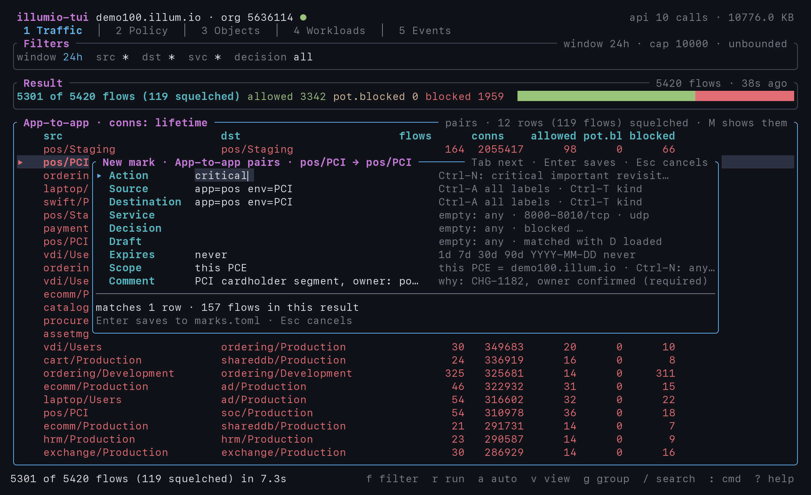
m on a pair: prefilled from the row, previews its matches, asks why.
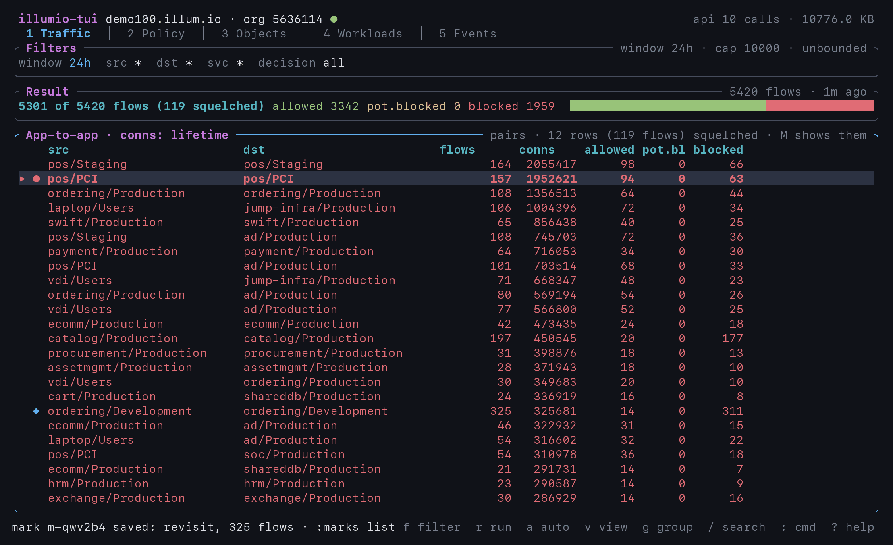
The gutter: ● critical, ◆ revisit; the squelched rows are gone, and the title says how many.
$ illumio-tui marks add --action squelch --src app=monitoring --dst any \
--service 5666/tcp --comment "Nagios NRPE checks, known and wanted"
$ illumio-tui marks export --format toml > team-marks.toml # share it; marks import reads it
2What would my draft do? D
problem
The draft holds new rules. Before you provision, you want to know which blocked flows they fix and what they leave blocked, on real traffic.
keys
D on any traffic view; D again goes back to the reported decisions; Esc cancels while it runs. CLI: --draft.
you see
The Result header says draft ✓ 409 fixed. App-to-app gains a draft column (66 would allow, +40 allow -24 block); Blocked gets draft allows N per section: here syslog into soc/Production, 94 blocked flows of which the draft allows 93. Flows shows blocked → allowed per flow.
PCE cost
14 requests here: one PUT on the query you already ran, status polls and one download. No new query, no policy change, no armed writes. Cached for 2 minutes.
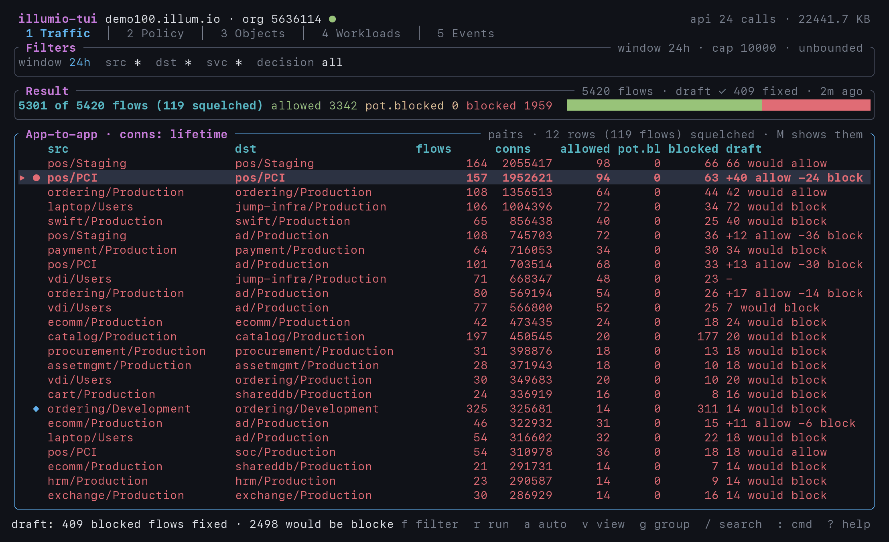
App-to-app after D: per pair, what the draft would allow and block.
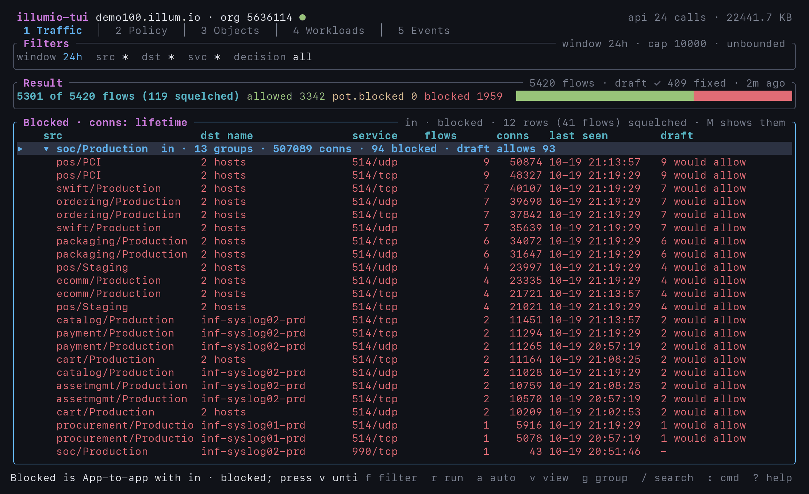
Blocked: the syslog ruleset in the draft fixes 93 of 94 blocked flows into soc/Production.
3Why is this flow allowed? E
problem
A VDI desktop reaches a domain controller on 53/udp. Which rule allows it, and where does that rule live?
keys
E on a flow (Flows, a one-flow pair, the app screen’s peers); j/k pick a rule; Enter opens it on Policy, ruleset and rule selected; w drafts a rule when none allows it. CLI: traffic explain.
you see
allowed by 1 rule (draft): allow, All workloads → role=dc, the services, ruleset 12. activedirectory | prod, scope app=ad & env=Production. Enter lands on that ruleset with the rule selected.
PCE cost
None for E: it reads the rule hrefs the PCE put on the flow after D and resolves them through the loaded draft policy. Without D first, it says so and offers it. The CLI makes one narrowed query with the draft evaluation: 11 requests.
E on win-endpoint-2 → acd-dc02-prd 53/udp (dns.exe), then Enter jumps to 12. activedirectory | prod on the Policy screen. GIF version.
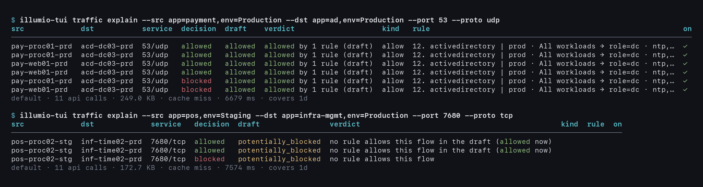
The same answer on the CLI, flow by flow: a blocked DNS flow the draft fixes, and a 7680/tcp flow no rule allows.
4Policy from traffic: the generator
problem
infra-mgmt/Production is two NTP servers. Seven apps query them on 123/udp, one more peer uses 7680/tcp. You want the allow rules for exactly that, without seven near-identical rules.
keys
A on a row (or :app infra-mgmt/Production) opens the app screen, G (or :gen) the generator. h/l or ←/→ move the slider from app·all to role·all; c on the fan-in line cycles off → Any → All Workloads; Space checks a peer; p previews every rule; Enter plans the writes into one confirm; n cancels it. CLI: gen, read-only.
you see
The fan-in line 123/udp from 7 peers (NTP?). With c on Any, one rule from the built-in Any IP list covers the port, with its catch spelled out: destination only for pos/PCI, 6 managed peers keep their own rules for their outbound. Checking pos/Staging takes coverage from 24 to 27 of 27 flows. Enter: 4 requests: 1 rule_set, 3 rules · planned with 1 read, each with method, path and body.
PCE cost
The app screen 1 request, the generator 0 (the draft rulesets were cached), the plan 1 read. The same traffic result feeds all of it.
G from the app screen, the slider, c through Any and All Workloads, Space on pos/Staging, p, Enter to the confirm and n: nothing was sent. GIF version.
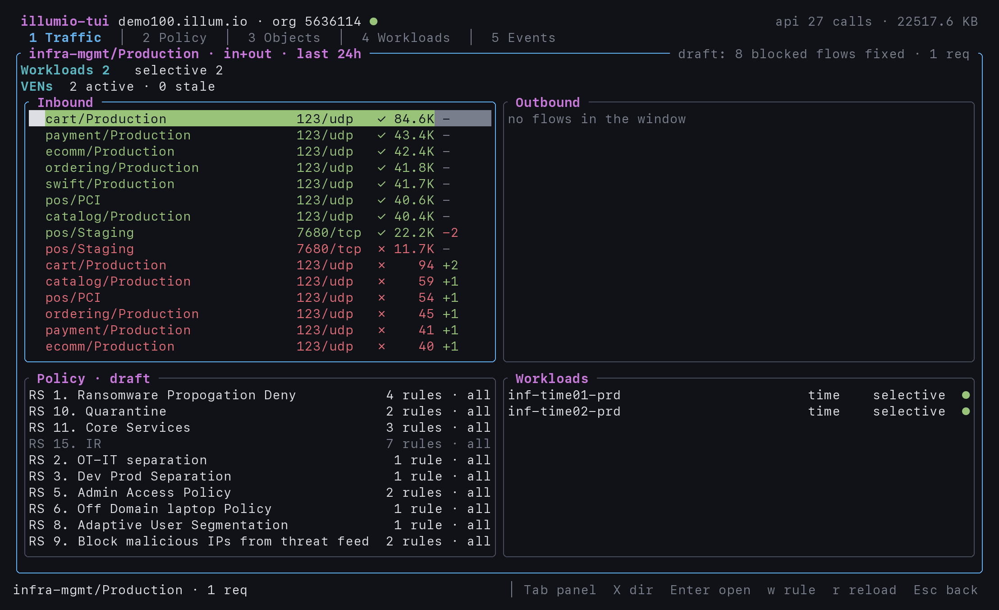
A: the app screen, peers in and out, its policy and workloads.
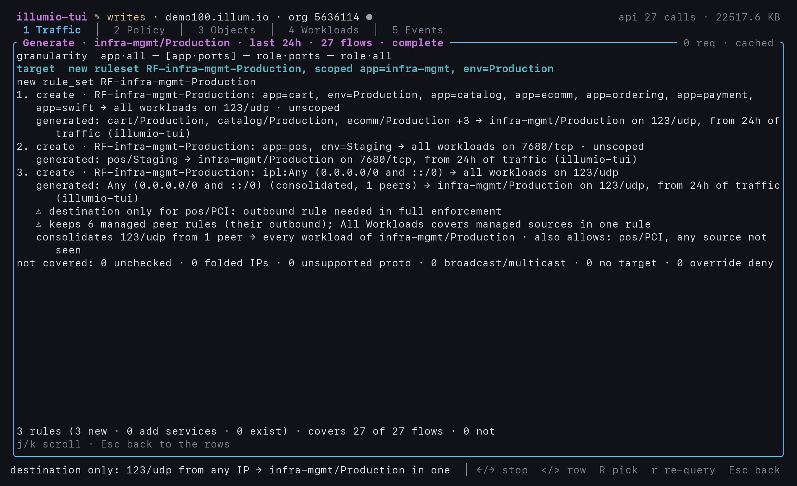
p: every rule, its description, and what it also allows.
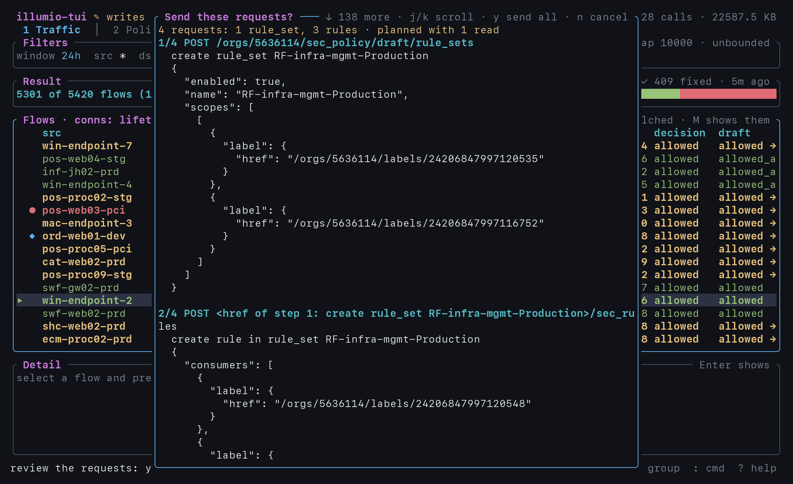
The single confirm: every request in order, bodies in full. It was answered with n.
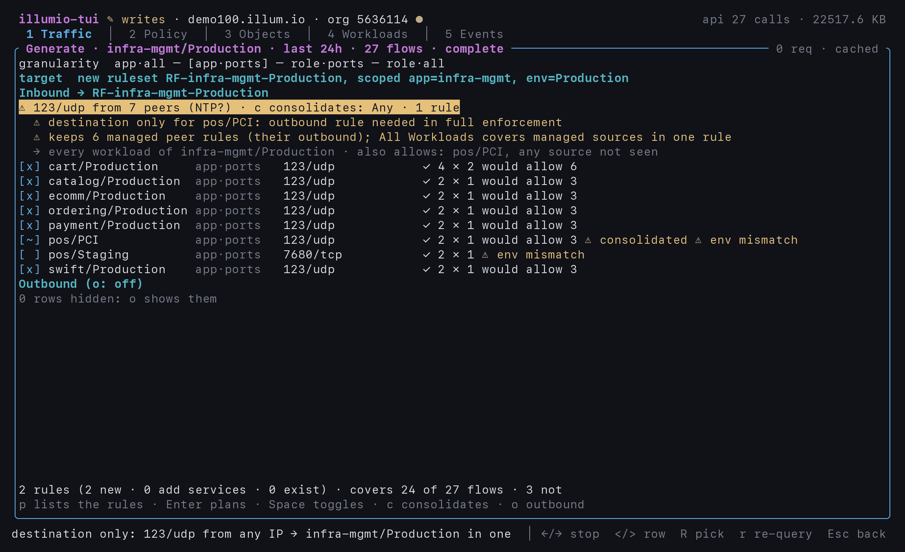
c: seven NTP clients, one rule from Any, the catch first.
The shared infrastructure apps (NTP, monitoring, syslog) should move to full enforcement together, and one of them carries two different loc labels.
keys
4, x groups by app and env, f filters by label (app=infra-mgmt,monitoring,soc env=Production), V on a group header marks the group, Space marks one workload, M picks the enforcement mode, L the labels; Enter reviews; Esc cancels. CLI: workloads enforce and workloads relabel.
you see
6 of 206 in three groups with VEN health and enforcement per group. M → full: 2 workloads: 2 selective → full; the confirm wants the count typed (full on more than one workload), shows the loaded traffic these workloads would block (in 9 blocked), offers d for a draft check, and lists the one bulk_update. L shows each key’s common value or (mixed: 2).
PCE cost
Grouping, filtering, marking and planning: none (one workload list, cached). Sending would re-read the 2 workloads first and skip any changed since the plan.
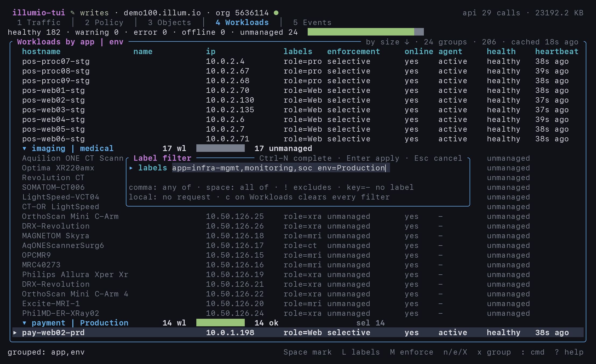
x then f: comma is any of, space all of, ! excludes.
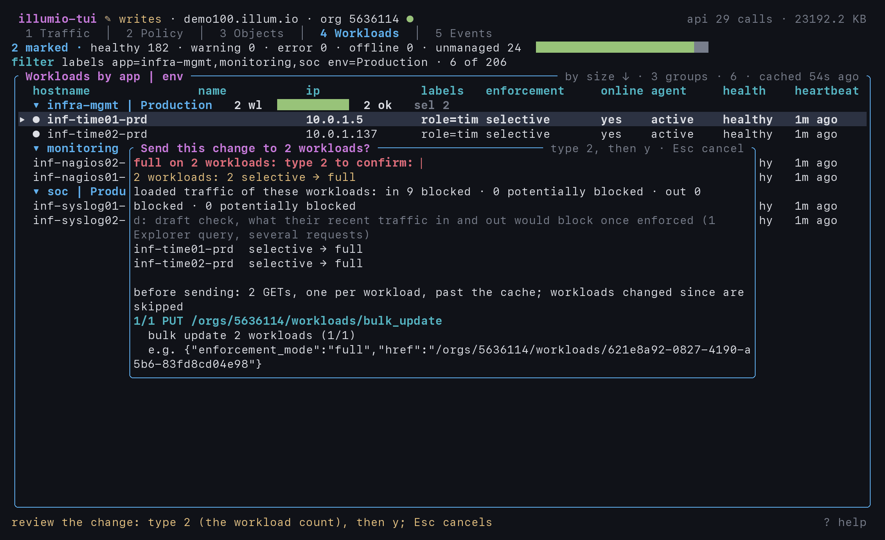
M → full → Enter: the typed count, the traffic it would block, the request. Esc: cancelled, nothing sent.
$ illumio-tui workloads relabel --set loc=ny --label app=infra-mgmt --dry-run
2 workloads: 1 to relabel (loc=ny) · 1 labels already so (skipped) · no re-read (the selection read ran 223 ms before, in this run) + 1 write: 1 bulk_update
workload change href
inf-time01-prd loc=ca → loc=ny /orgs/5636114/workloads/621e8a92-...
inf-time02-prd skipped: labels already so /orgs/5636114/workloads/bd1b6de4-...
6From visibility to enforcement: :readiness, :enforce, watch, rollback
problem
Which apps can go to full enforcement today, what stops the others, how do you close the gaps, and how do you undo a move exactly?
keys
:readiness lists every app of the result on screen (s sorts, / searches, D evaluates the draft first); Enter on an app, :enforce <app> or e in the app overlay opens the enforcement overlay: five steps, Tab or 1–5. 1 Readiness the numbers, verdict and warnings. 2 Rules the gaps: G the generator for the app, w an allow rule for the gap, m an accept-blocked mark. 3 Provision the app’s pending changes, P provisions them through the usual preview. 4 Enforcej/k full or selective, v the visibility level, Enter the bulk confirm with the typed count (an app that is not ready asks for the word enforce first). 5 Watchr the blocked-since query, R previews the rollback.
you see
All 23 labelled apps of the demo PCE are needs rules over the last 24 hours; infra-mgmt/Production is closest at 90.5%. Its overlay: two workloads in selective, one gap (7680/tcp from pos/Staging, 3 flows), two pending changes, and step 4 blocked: the plan 2 workloads: 2 selective → full, the record directory, and writes off.
PCE cost
:readiness reuses the query on screen and its D; it read the workloads, pending changes and draft rulesets once (3 requests, cached). Opening the overlay: 0. Writes are the bulk move and its change record, exactly as the CLI writes them. r on Watch is one query, only when pressed; nothing refreshes by itself.
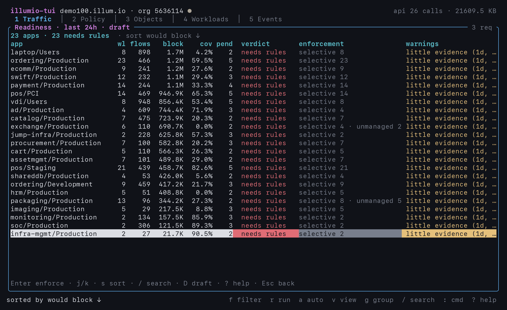
:readiness: every app of the result on screen, a verdict each; Enter opens the overlay for one.
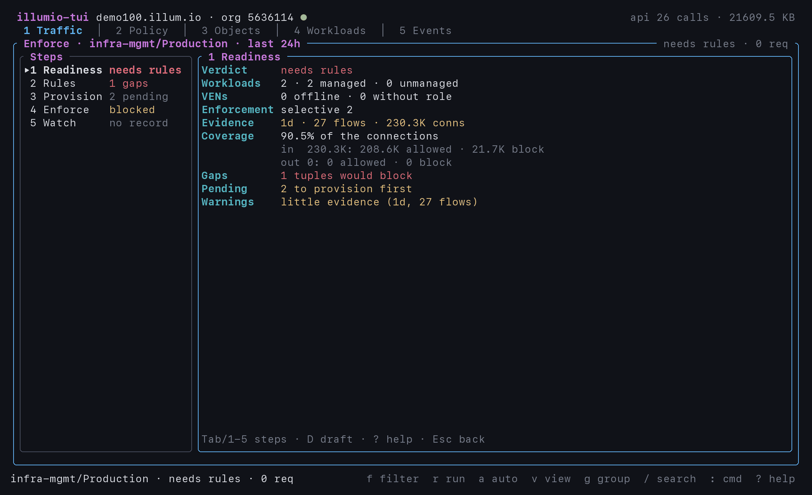
Step 1 after D: the numbers behind the verdict, the five steps on the left.
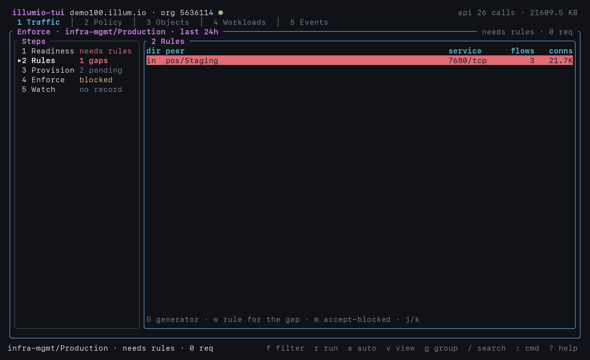
Step 2: the gap as a policy tuple; G, w or m close it.
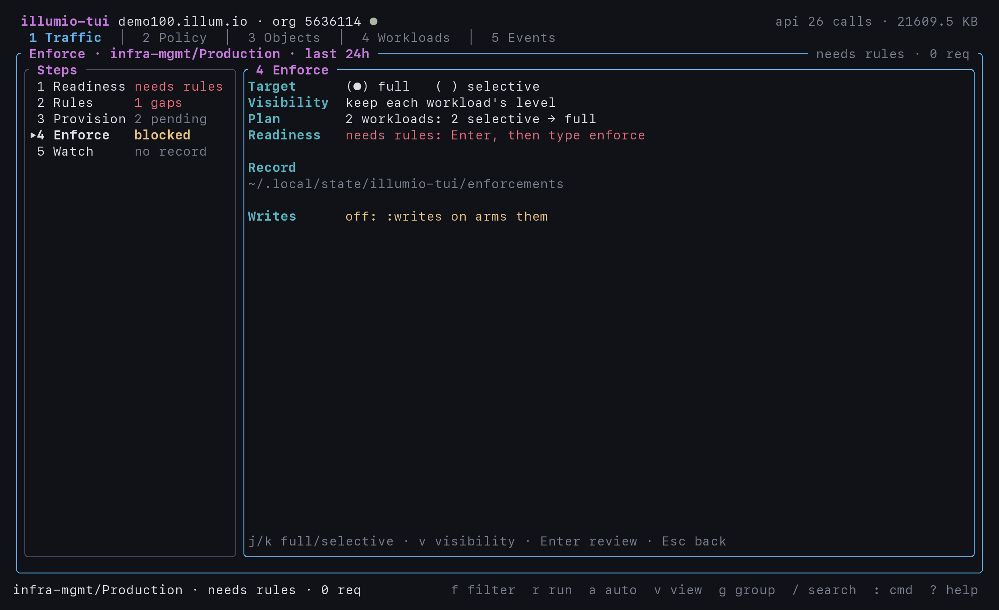
Step 4, the plan before any confirm. Not ready: Enter would ask for the word enforce. It was not pressed.
The same job on the CLI, for scripts and cron: readiness for every app, readiness --app X for its gaps and pending changes, enforce X --to full --dry-run (exit 6 until ready) then --yes --confirm-count N, enforce X --watch (exit 7 when something is blocked since), enforce X --rollback. Over 7 days, all apps: one Explorer query with the draft evaluation, 25 requests, 43 s; one app: 14 requests, 9 s; --watch: one query, 8 requests.
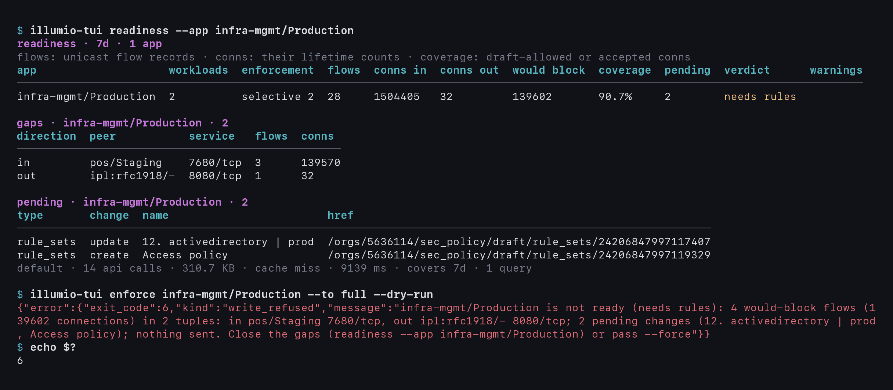
The gate on the CLI: readiness names the gaps; enforce refuses with exit 6 until they are closed (or --force).
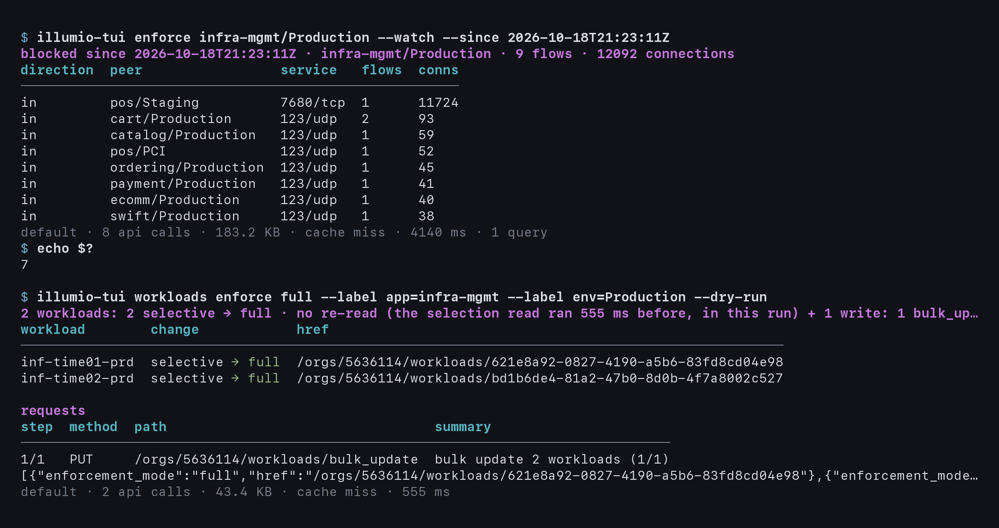
--watch exits 7 when something is blocked, for cron or CI; the move itself is a bulk plan you see before --yes.
The TUI shots use the last 24 hours, the CLI runs 7 days: the coverage and gap counts differ with the window.
7Find rules fast: f, t, I
problem
Which rules, in any ruleset, touch pos or ordering? Which workloads does one of them really cover, and can you switch it off for a test?
keys
On Policy, f searches every loaded ruleset: app=ordering,pos (a label in a scope, consumer or provider, directly or through a label group; comma is any of), ipl:Corp, svc:443/tcp or svc:PostgreSQL, wl:web01, href:, disabled, enabled, deny, allow, intra, extra; terms apart by spaces all hold. scope:, src: and dst: say where a label sits (src:/dst: also take ipl:, wl: and all; scope:global), !env=prod finds exclusion actors, a leading - leaves a term out: src:role=web dst:role=db extra (extra-scope rules from web to db), scope:app=payment -svc:443/tcp (payment rules not covering 443), src:!env=prod (consumers that say All except prod), src:all -deny (allow rules open to All Workloads). The header says how many matched of the rules loaded. Enter opens the rule in its ruleset, c clears. I lists the workloads a rule matches, providers first, Tab the consumers, Enter jumps to one on Workloads. t enables or disables a rule or ruleset (a draft change, writes armed). CLI: policy search, policy rules impact <href> --list providers|consumers, policy rules enable|disable, policy rulesets enable|disable.
you see
Search · app=ordering,pos: 26 rules across 7 rulesets, in evaluation order, with scope, consumers, providers, services and the rule’s own enabled ((ruleset off) when its ruleset is disabled). I on role=processing → role=db, postgresql in 14. pos | pci: 4 providers (pos-db01..04-pci) and 6 consumers, with labels, enforcement and online.
PCE cost
None: search and I use the loaded policy and the cached workload list (i reads it once if no screen has). The CLI search is one rulesets read and the name index, cached. t is one PUT through the usual confirm.
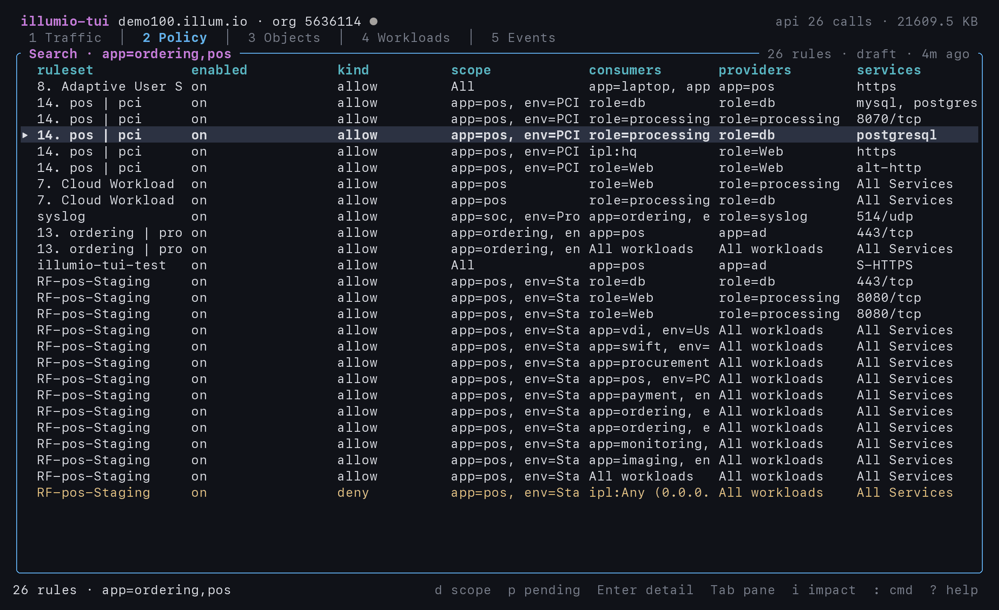
fapp=ordering,pos: every rule that names either app, across rulesets, no request.
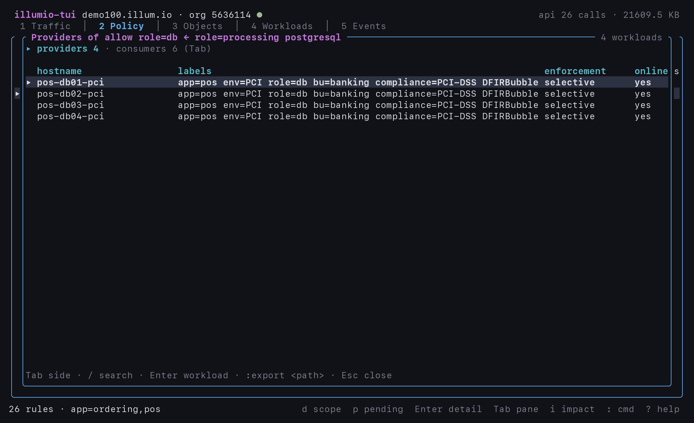
I on a search row: the four database workloads behind the rule; Tab shows the six consumers.
Ctrl-U empties the line in every text input, as in a shell: the filter editor, the mark and rule forms, the : prompt. Ctrl-N / Ctrl-P complete labels, IP lists, services and values without a request.
Shell completions for bash, zsh and fish ship with the Homebrew formula and the .deb/.rpm; otherwise illumio-tui completions zsh > ~/.zfunc/_illumio-tui (PowerShell: illumio-tui completions powershell | Out-String | Invoke-Expression in your profile). Every subcommand, flag and enum value completes, and --profile completes your profile names. Labels, apps, hostnames, services, IP lists and label groups complete from a per-profile names cache that the list commands, the TUI and illumio-tui completions refresh fill (--clear deletes it; completion_cache = false keeps PCE names off disk). The cache needs a profile from the config file with its own host and org_id: a PCE named by --host/--org-id or PCE_HOST/PCE_ORG_ID writes none. Completion never contacts the PCE.
:export <path> writes the table on screen as CSV, the same format as the CLI’s --csv.
Apple Terminal garbles 24-bit colour before macOS 26, so there the theme is mapped to the xterm 256 colours by itself; ILLUMIO_TUI_COLORS=256 or truecolor overrides it anywhere.
One app, start to finish
illumio-tui readiness ranks every app; infra-mgmt/Production is closest, 90% covered.
readiness --app infra-mgmt/Production: the gaps are 7680/tcp from pos/Staging and 8080/tcp out; two rulesets wait for provisioning.
In the TUI, r once for 24 hours, m squelches the Nagios noise, D overlays the draft.
E on the 7680/tcp flow: no rule allows this flow. E on a DNS flow: the activedirectory rule, Enter to see it.
A, G: NTP from 7 peers folds into one Any rule with c, Space adds pos/Staging, p says 27 of 27 flows covered, Enter and y write the ruleset and 3 rules; P in Policy’s pending overlay provisions them.
:readiness (or readiness --app) again until ready; :enforce infra-mgmt/Production, step 4, Enter and the typed count (CLI: enforce --to full --dry-run, then --yes --confirm-count 2).
enforce --watch from cron the next morning (or r on step 5): exit 0, or exit 7 and the tuples; R or --rollback if it has to go back.
On the demo PCE the recordings stop at step 5’s confirm with n, and at step 6’s plan and dry run: it is shared.
4CLI: getting started
From install to a useful answer, in eight short steps.
1. Connect
Install the binary, then give it a PCE: a dotenv file with the illumio-mcp-server names, or a profile in ~/.config/illumio-tui/config.toml (see Configure).
$ cat pce.env
PCE_HOST=pce.example
PCE_ORG_ID=1
API_KEY=api_xxxxxxxxxxxx
API_SECRET=xxxxxxxxxxxxxxxx
$ illumio-tui --env-file pce.env health
field value
ok true
host demo100.illum.io
org_id 5636114
status [{"generated_at":"2026-10-19T21:21:07+00:00","listen_only_m…
writes false
default · 1 api call · 0.1 KB · cache none · 2102 ms
The last line goes to stderr on every command: what it cost. To keep the connection, illumio-tui profile add demo --from-env-file pce.env turns the same file into a profile (no request).
$ illumio-tui completions zsh > ~/.zfunc/_illumio-tui # bash, fish and powershell too$ head -1 ~/.zfunc/_illumio-tui
#compdef illumio-tui
Packaged installs (Homebrew, .deb, .rpm) ship the scripts already.
5The CLI
The same library, scriptable: JSON for agents, tables for humans.
Output is a table at a terminal and JSON when stdout is piped; force either with --table or --json. --csv prints the full table as CSV for spreadsheets, and :export <path> does the same from the TUI.
# connectivity, objects, workloads, events$ illumio-tui health
$ illumio-tui labels --key app
$ illumio-tui labels --unused --json # by the PCE's usage flags$ illumio-tui iplists --table
$ illumio-tui where-used label env=Production # scopes, rules, groups, pairing profiles, workloads; all cached$ illumio-tui where-used iplist Corp --csv
$ illumio-tui workloads --label app=web --online true
$ illumio-tui workloads --unlabeled --json # no app, env or role label$ illumio-tui workloads --health warning,error --ven-version '23.2.*'
$ illumio-tui workloads ven-summary --csv # health, versions, enforcement, messages; one read$ illumio-tui workloads --label app=shop,crm --group # any of, one request; per app|env$ illumio-tui events --since 1h --severity err
$ illumio-tui events --type sec_rule --diff # each change as -/+ lines$ illumio-tui events --exclude-type =user.login --severity warning+ # local filters$ illumio-tui events --actor =alex@ryte.de --exclude-actor 'agent:*' # by actor, local too# policy, draft by default, every href resolved to a name$ illumio-tui policy rulesets
$ illumio-tui policy rules "Web-DB" --impact --json
$ illumio-tui policy pending
# Explorer traffic: flows, app-to-app, blocked, label groups, the mesh$ illumio-tui traffic query --window 24h --src app=web --dst app=db --json
$ illumio-tui traffic query --window 1h --group app,env
$ illumio-tui traffic query --window 1h --blocked
$ illumio-tui traffic groups --window 1h --keys app,env,role
$ illumio-tui traffic mesh --window 1h --no-user --json
$ illumio-tui traffic query --window 30d --dry-run
$ illumio-tui traffic explain --src app=web --dst app=db --port 5432 --proto tcp
# one app: its profile, and the allow rules its traffic needs (never written)$ illumio-tui app shop/prod --window 24h --json
$ illumio-tui gen shop/prod --granularity role-ports --outbound --table
$ illumio-tui gen shop/prod --consolidate 5666/tcp=any --json
# connection profiles$ illumio-tui profile add demo --from-env-file path/.env
$ illumio-tui profile list
$ illumio-tui profile use prod
Explorer, without the clicking
traffic query submits the PCE's asynchronous Explorer query, polls with backoff, downloads the result, flags truncation, and resolves every label href to key=value.
Filters read like you think: app=web, ip:10.0.0.5, ipl:NAME, wl:HOST, fqdn:NAME. A comma means AND, repeating the flag means OR. Add --exclude-src, --exclude-dst, --exclude-service, --port, --proto, --process and --decision as needed: --dst env=prod --exclude-src app=monitoring --exclude-service 22/tcp goes into Explorer’s own exclude lists, at no extra cost. A port range is FROM-TO/PROTO with tcp or udp, both ends included: --exclude-service 8000-8100/tcp, or --port 8000-8100 --proto tcp to include it. --exclude-service svc:NAME takes a service object’s ports and port ranges. fqdn: is a destination filter only: on --src or --exclude-src it exits 2. An unknown label value fails locally, before the PCE sees anything.
--group app,env folds flows into label pairs; --blocked keeps blocked and potentially blocked flows, grouped by destination group and port. traffic groups prints one row per source and destination group with connections, bytes and decisions (--services: one per group pair and port/proto); traffic mesh one row per user, process, source, destination, service and destination process, with --no-user and --no-process to merge. --keys picks the label keys (default: the profile's scope keys). --app shop/prod --direction in spends the cap on one app: its labels go into the query (two queries for both, merged). flows counts flow records; conns and bytes are the lifetime counts of those records, as in the PCE UI, and JSON and CSV add them per decision (allowed_conns, pot_blocked_conns, blocked_conns, unknown_conns). --transmission unicast (or broadcast, multicast; :unicast in the TUI) leaves out the other kinds in the query itself; the default keeps every kind, where workloader counts unicast only.
illumio-tui app shop/prod prints the app overlay as one JSON envelope for agents: workloads and VENs, peers and policy; --table and --csv --section print it per section.
illumio-tui gen shop/prod prints the generator's proposal: the target ruleset, one row per peer (kindintra, app, ip_list with its ip_list and ips, ip, workload or folded_ips), the rules with their exact PCE bodies, the IP lists to create, the fan-in ports under consolidations (--consolidate 5666/tcp=any|all switches one to its single rule) and a coverage preview. A capped result exits 2, an incomplete one 4.
--impact on policy rules counts the workloads each rule matches as providers and consumers, across the ruleset's scopes, label groups and exclusions, from one cached workload read; iplists gives every list its size.
Built for agents
Every command prints one envelope on stdout: your data, plus a meta block that says what it cost.
Envelope shape with illustrative values. cache is one of hit, miss, bypass or none; a write adds meta.write.
Errors go to stderr as JSON, so a pipeline never mistakes a failure for data:
{"error":{"exit_code":2,"kind":"args","message":"expensive query: window is 30d (> 7d); re-run with --yes to confirm"}}
1
generic failure
2
arguments or configuration
3
authentication
4
PCE error
5
rate limited
6
write refused by the guard, or enforce on an app that is not ready
7
flows blocked since an enforcement (enforce --watch)
141
stdout closed by its reader (| head): the command stops quietly, no error printed
Agents and scripts: schema and --fields
JSON is the default whenever stdout is not a terminal, so an agent gets the envelope without asking. Every envelope names its schema in meta.schema; illumio-tui schema lists them all (plus the shared envelope, meta and error), and illumio-tui schema workloads ven-summary prints that envelope’s JSON Schema (draft 2020-12). No profile, no request. Every envelope the CLI’s tests read is checked against its schema, so the schema is the contract.
--fields keeps only the named fields of data (each element of a list), dotted paths reach into nested objects and through lists and keep the nesting; meta is never filtered. JSON names come from the schema (of the shape the flags print). With --csv the names are the column headers, not the JSON names, picked and ordered; schema COMMAND lists them in its $comment. Either way the names are checked before any request (exit 2, listing the valid ones), with a table it is exit 2, and it never changes what is asked of the PCE. Failures go to stderr as {"error": {...}} with the exit codes above; argument errors clap catches print its usage text, exit 2.
6Cool things you can do with the CLI
Recipes for cron, CI and spreadsheets, each with its real output from the demo PCE.
Writes below are dry runs. The connection flags are left out; each command ran with --env-file.
Gate a pipeline on readiness
One Explorer query judges every app against the draft; jq -e turns the verdicts into an exit code your CI understands.
A filter selects, --dry-run shows every workload’s change and request; --yes --confirm-count N sends only when N matches.
$ illumio-tui workloads enforce full --label app=infra-mgmt --label env=Production --dry-run
2 workloads: 2 selective → full · no re-read (the selection read ran 555 ms before, in this run) + 1 write: 1 bulk_update
workload change href
inf-time01-prd selective → full /orgs/5636114/workloads/621e8a92-0827-4190-a5b6-83fd8cd04e98
inf-time02-prd selective → full /orgs/5636114/workloads/bd1b6de4-81a2-47b0-8d0b-4f7a8002c527
$ illumio-tui workloads enforce full --label app=infra-mgmt --label env=Production --yes --confirm-count 2
Share noise filters with the team
Marks are a TOML file: export yours, commit it, and everyone’s views and CLI reports drop the same known noise.
$ illumio-tui marks export --format toml > team-marks.toml
$ cat team-marks.toml
# illumio-tui marks. The tool rewrites this file: comments are not kept, put text in `comment`.
[[mark]]
id = "m-5awn1n"
action = "squelch"
src = { labels = { app = "monitoring" } }
dst = "any"
service = "5666/tcp"
expires = "2027-01-17T21:24:40.736238Z"
comment = "Nagios NRPE checks, known and wanted"
created = "2026-10-19T21:24:40.736238Z"
created_on = "demo100.illum.io"
$ illumio-tui marks import team-marks.toml # on a colleague's machine
Saved filters: type it once
Name a filter and keep it in the profile: :save prod-blocked in the TUI (Traffic, Policy, Events, Workloads), :filters to pick one, :load to apply it, or --save-filter and --filter on traffic, policy search, events and workloads. Fields hold exactly what you type into f; a flag replaces its field. Saving never contacts the PCE; applying behaves like f and Enter, cost confirm included.
$ illumio-tui traffic groups --src env=prod --exclude-dst app=backup --decision blocked --save-filter prod-blocked
saved traffic filter prod-blocked to ~/.config/illumio-tui/config.toml
$ illumio-tui traffic groups --filter prod-blocked --window 1d # the flag wins$ illumio-tui filters default traffic prod-blocked # the TUI opens with it
screen default previous config_path
traffic prod-blocked - ~/.config/illumio-tui/config.toml
$ illumio-tui filters list
screen name default summary
traffic prod-blocked yes src env=prod · dst !app=backup · decision blocked
$ cat ~/.config/illumio-tui/config.toml
...
[profiles.demo.filters.traffic.prod-blocked]
decisions = ["blocked"]
dst = "!app=backup"
src = "env=prod"
[profiles.demo.filter_defaults]
traffic = "prod-blocked"
A default is in force when the TUI starts (and after :profile) without a request of its own: Traffic still waits for r, and asks first when the default is expensive. In :filters it is marked * and * toggles it; :default NAME|off does the same. The CLI never applies it unless you pass --default-filter.
Pending changes and provisioning in a pipeline
See what waits in draft, diff it, and print the exact provision request before anyone sends it.
Subcommands, flags, enum values, files and your profile names complete in bash, zsh, fish and PowerShell, without a request. PCE names (app=shop, wl:web01, svc:SSH, shop/prod) complete from a local names cache: one explicit refresh, then the lists you read anyway keep it current. It needs a profile from the config file (host and org id from there, not from flags or the environment), holds object names in plain text (mode 0600), and completion_cache = false turns it off.
Off unless the profile says yes. Planned, shown, confirmed, audited.
illumio-tui writes labels, IP lists, services, unmanaged workloads, pairing profiles (CLI), and policy: rulesets, allow and deny rules, provisioning, and the labels of VEN-managed workloads. None of it happens by accident:
The profile gates it. Without writes = true (or ILLUMIO_WRITES=1) every write is refused with exit code 6, even a dry run.
The CLI needs --yes.--dry-run prints the exact method, path and JSON body and sends nothing; with neither flag nothing is sent. Nothing is ever retried.
The TUI starts with writes off.:writes on arms them for the session, the header shows ✎ writes, and n / e / x create, edit and delete (Workloads: X, as x groups there). The confirm overlay shows the summary, METHOD path and the whole body before y sends it once.
Bulk changes guard themselves.L / M on Workloads and workloads enforce / relabel on the CLI change many workloads in bulk_update requests of 100, after one confirm listing every change. Full or selective on several workloads, or any change to more than 25, needs their count typed (--confirm-count), and the CLI needs a filter or --all; d asks the draft policy what their traffic in and out would block, only when pressed. Before sending, a fresh read skips every workload changed since the plan; a chunk with a failure or an unknown outcome stops the rest, and each chunk’s audit entry lists every workload’s outcome.
Pending changes are diffed. On Policy, p lists what waits for provisioning; Enter shows a draft IP list, service or ruleset against active, and P provisions the marked entries after showing the exact change_subset.
Every sent write is audited to ~/.local/state/illumio-tui/writes.jsonl (mode 0600) with the body sent and the status received.
Updates send only what changes, and carry untouched list entries through exactly as the PCE returned them.
Writes armed with :writes on, w drafts an allow rule from a blocked flow, Ctrl-N completes labels, services and values in the rule and label forms, and the recording ends at the confirm with n: nothing was sent. GIF version.
w on a blocked flow: the rule form pre-filled from its labels, Ctrl-N cycling label values.The confirm overlay: summary, impact, POST path and the whole body before anything is sent.
pairing-profiles create sends the name plus only the flags given, so the PCE's defaults apply to the rest; a taken name or an unknown label is exit 2 before anything is sent. The PCE locks every setting whose lock is not sent: --unlock names the ones to leave changeable at pairing. Pairing keys are left out: an activation code is a secret.
Rules use a compact token grammar: app=web, group:NAME, iplist:NAME, workload:HOST, all, and ! to exclude. --impact on a rule write reports the workloads it will touch before anything is sent. The README has the full reference.
8Configure
Environment variables or a profile file; flags override both for one run.
Environment variables
The connection uses the same names as illumio-mcp-server, so an existing setup just works:
256 maps the theme to the xterm 256 colours (the default in Apple Terminal, which garbles 24-bit colour before macOS 26); truecolor forces 24-bit
--env-file .env loads a dotenv file for one run. Per-run flags: --host, --pce-port, --org-id, --profile, --config, --insecure, --no-cache. The connection port flag is --pce-port because traffic query has its own --port filter.
Profiles
Write one from a dotenv file (- reads a paste from stdin) or flags; local, no request:
Flags override imported values. The secret comes from the env file, --api-secret-stdin, --api-secret (lands in shell history) or --api-secret-cmd (wins, no plaintext stored); a plaintext secret is stored as api_secret in a file of mode 0600. --force updates an existing profile's connection settings and keeps the rest (limits, labels, generator); the first profile becomes the default. Single-quote a value with a $: dotenv expands $VAR. The secret is never printed.
In ~/.config/illumio-tui/config.toml:
default_profile = "prod"
[profiles.prod]
host = "pce.example"
org_id = 1
api_key = "api_..."
api_secret_cmd = "op read op://vault/pce/secret"
writes = true # optional: allow writes
[profiles.prod.limits]
traffic_max_results = 10000 # starting row cap, at most 200000
traffic_default_window = "24h"
traffic_auto_backfill = false
requests_per_second = 2
auto_refresh_min_seconds = 60 # at least 60
[profiles.prod.labels]
scope_keys = ["app", "env"]
tier_key = "role"
ignore_keys = ["DFIRBubble"]
[profiles.prod.generator]
ruleset_name = "RF-{app}-{env}" # the default
consolidate_min_peers = 5 # the default; at least 2
[profiles.prod.events]
exclude_types = ["=user.login", "agent.*"] # hidden by default
api_secret_cmd fetches the secret from your password manager at run time; keep it non-interactive, because :profile runs it while the TUI owns the terminal. Switch profiles with profile use, --profile or :profile.
The label model
Rulesets are scoped by scope_keys (app, env by default) and rules select tiers by tier_key (role). The traffic views, traffic groups, traffic mesh and traffic query --blocked group by the scope keys, and the w rule form pre-fills from both. Labels print in scope-key order, then the tier key, then alphabetically.
ignore_keys hides housekeeping keys from label columns and the g picker; JSON output and the workload edit form keep them, the Labels tab shows them on i, and a scope or tier key is never ignored.
Event types hidden by default
exclude_types lists event types the Events screen and events hide unless asked: each a substring, a * glob or an exact type (=user.login), added as a !term to the type filter. The TUI's Type field starts with them (f drops one for the session); events --all-types shows every type. The tool reads this setting and never writes it.
Saved filters
[profiles.<name>.filters.<screen>.<filter>] holds named filters for Traffic, Policy, Events and Workloads in the f editors' text (a policy filter is one search query). :save and --save-filter write them, keeping every other setting; one that does not parse fails only when used. Names: letters, digits, ._-, up to 64, not starting with -.
[profiles.demo.filters.traffic.prod-blocked]
src = "env=prod"
dst = "!app=backup"
service = "!53/udp, 8000-8100/tcp"
decisions = ["blocked", "potentially_blocked"]
window = "7d" # left out: the window in force stays
[profiles.demo.filters.policy]
deny-prod = "dst:env=prod deny"
[profiles.demo.filters.events.noise-free]
type = "!agent.*, !=user.login"
actor = "!system"
severity = "warning+"
[profiles.demo.filters.workloads.prod-unenforced]
labels = "env=prod"
enforcement = "visibility_only"
managed = true
[profiles.demo.filters.workloads.unhealthy-vens]
health = ["warning", "error", "offline"]
ven_version = "23.2.*" # exact, or a * glob
[profiles.demo.filter_defaults] # one per screen, a saved filter's name
traffic = "prod-blocked"
events = "noise-free"
filter_defaults names each screen's default: the TUI applies it at startup and after :profile, before the screen loads and without an extra request; the CLI only with --default-filter. One that names no filter or does not parse is ignored with a warning. Removing a filter that is a default removes the default. An events filter's type terms get exclude_types on top, so both apply.
The generator
ruleset_name names a ruleset the policy generator creates, as a template over the scope keys (RF-shop-prod); every {key} must be a scope key and every scope key must appear. consolidate_min_peers is how many inbound peers on one port make it a fan-in line; DNS, NTP, Kerberos, LDAP, SMB, syslog, SNMP and monitoring-agent ports need 3.
9Gentle on the PCE, by construction
Your PCE is shared, expensive and important. This tool treats it that way.
Most tools that hammer a management plane do it by accident: a refresh loop nobody asked for, a retry storm, an Explorer query over ninety days that someone fired off to see what happens. illumio-tui is built so that none of that can happen quietly. Every request is caused by you, throttled, cached where it can be, counted, and shown back to you.
2 req/s, burst 5One token bucket shared by every request (requests_per_second in the profile). 429 and 503 pause the whole client with exponential backoff and jitter, honouring Retry-After. POSTs are never retried.
Counted, alwaysEvery call and byte goes into meta.api_calls and meta.bytes, and into the TUI header. You always know what you spent.
Cached 15 / 5 / 1 minLabels, label groups, IP lists and services for 15 minutes; policy and workloads for 5; events for 1. One traffic result is kept until the filter changes; draft decisions for 2 minutes.
5 requests to startThe TUI opens with health plus the four object lists. The first visit to Workloads and to Events costs one request each; going back costs none.
No auto-refresh by defaulta turns it on per screen, never faster than every 60 seconds, with a countdown; it switches itself off after a failed refresh.
24 h, 10 000 rowsExplorer queries default to a 24-hour window and a 10 000-row cap, at most 200 000. Truncation comes from the PCE's own row count and is always reported; B and --backfill re-run the window at a larger cap, one query per rung, asking above 10 000.
Draft view on requestD and --draft ask the PCE to re-evaluate your own query against draft policy: one PUT on that query resource, polls and one download per query, cached. It changes no policy, so it needs no armed writes; it is never sent without the key, the flag, or a successful write of yours: that re-evaluates the draft decisions on screen (or a w rule's flows) once, visibly, with Esc on Traffic to cancel, and only where D would run without asking. A draft answer a write overtook is never cached.
--yes above 7 days or 10 000 rowsExpensive queries stop with exit code 2 and tell you why, until you confirm on purpose.
--dry-runPrints the exact Explorer request body and sends nothing. See the query before the PCE does.
10Roadmap
New in the 0.5 line (v0.5.0 to v0.5.6): PCE names in shell completion from a local per-profile cache, with completions refresh (#64); the intra- and extra-scope rule form, with what a rule means and warnings as you type (#65); profile add from an env file or flags (#66); event type filters with excludes, exact types and per-profile defaults (#67); the policy search grammar with scope:, src:, dst: and negation (#68); saved filters (#70) and a default filter per screen (#74); VEN health on Workloads (#72); events by actor (#71); a schema command and --fields for agents and scripts (#73); where-used for labels, groups, IP lists and services (#75); pairing profiles in the CLI (#76). The changelog has the notes of every release.
Open now:
winget: automatic submissions once the first winget-pkgs PR is merged (#69).
An idea: an MCP mode, the same read and write layer, with its throttle and guards, as tools for an agent.
Every idea from the list in issue #5 has shipped. New ideas are welcome in the issue tracker.
What it leaves to others: workloader is the established batch tool for the PCE, and the two work side by side. illumio-tui is for interactive analysis, rule drafting and agents; for bulk import and export, automated labelling, VEN lifecycle, rule and port usage reports and running across many PCEs, use workloader.
Suggestions and bug reports are welcome in the issue tracker.
Licence and links
illumio-tui is free software under the GNU General Public License v3.0 only. It is an independent project and is not an official Illumio product.
The design was written up as a spec and approved before any code existed; each implementation plan was then carried out task by task, every task independently reviewed before the next one started. AI coding agents in Claude Code did the implementation and review work, under the owner's direction.